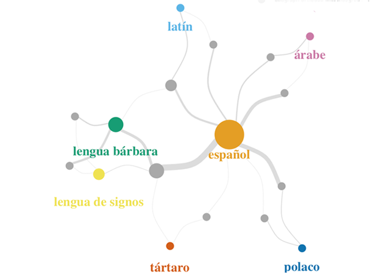
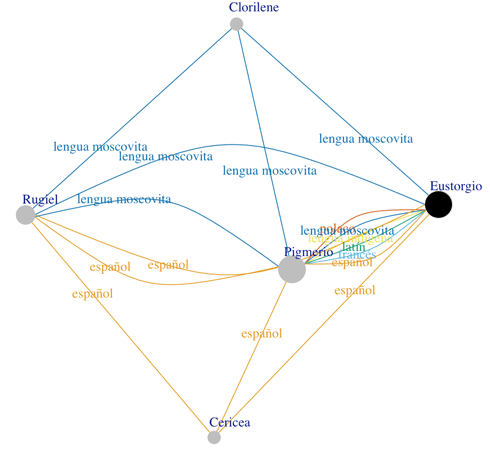

Multilingual Discourse in Narrative Fiction Analyzed with Character Networks
<http://editio.github.io/presentations/multilingual_networks>
Content
- Multilingualism in literature (intro) (3-21)
- Glottaliteratur (classification) (22-28)
- Network formalization (method) (29-32)
- Signal of multilingual discourse and
- protagonists as poliglots (output) (33)
Multilingualism in literature
- Explicit or implicit reference to a foreign language.
- Not exclusive of contemporary / postcolonial literature.
- Greek novel: Heliodorus, Aethiopica.
- Spanish Baroque novel: Cervantes, Persiles; Enríquez, Semprilis; Suárez, Eustorgio.
Tíamis avanzó [...] y, después de ordenar a Cnemón que tradujera sus palabras a los extranjeros (éste ya comprendía la lengua egipcia, pero Tíamis aún no dominaba a la perfección el griego), tomó la palabra y dijo: —«Camaradas de armas, conocéis de siempre mis sentimientos hacia vosotros...»
llegó a la orilla del mar un bárbaro gallardo, que a grandes voces, en lengua toscana, dijo: — «Si por ventura sois cristianos los que vais en esas barcas...»
Pigmerio en lengua polaca dijo a Eustorgio: — «este, señor, es el padre de aquel moço que murió y enterramos en la cueva, que en el pecho le hallé yo una carta para él.»
Glottaliteratur
- glotta-mimesis: reproduces languages on the discours level.
- glotta-mimesis iconic: discours and historie are concordant.
- glotta-mimesis indexical: discours shows partly indications.
- glotta-diegesis: marks languages on the histoire level.
- glotta-pithanon: plausible motivation for the use of a foreign language.
- glotta-pithanon implicit.
- glotta-pithanon explicit.
- glotta-aporetic: impossibility to determine the language.
glotta-mimesis iconic
Pigmerio en lengua polaca dijo a Eustorgio: — «To, panie, jest ojciec tego chłopaka, który zmarł i którego pogrzebaliśmy w jaskini, i na którego to znalazłem list do niego»
glotta-diegesis
Pigmerio en lengua polaca dijo a Eustorgio: — «este, señor, es el padre de aquel moço que murió y enterramos en la cueva, que en el pecho le hallé yo una carta para él.»
Network formalization
- Character networks of fictional texts: widespread DH method.
- Manual or automated character extraction based on co-occurrence in scenes, chapters, indexes, etc.
- Dramatic texts. Moretti 2011, Trilcke 2013, Algee-Hewitt 2017, Fischer 2018 (dlina, DraCor); Narrative texts. Elson 2010, Rochat 2014, Isasi 2017
- Network measures for a quantitative analysis of protagonism: centrality values.
2 novels: Semprilis, Eustorgio
- Manual extraction into tabular data.
- Segmentation based communicative interaction (strong dialogical structure in the novels).
- Communicative (direct and indirect speech) and interactive (non speaking conversation partners).
- Language information to each interaction using the glottaliterary classification.
Signal of multilingual discourse
Affiliation Network (bipartite graph) of languages and characteres in Semprilis
Protagonists as poliglots
Multigraph showing parallel edges (languages) between nodes (characters) in Eustorgio
Multilingual Discourse in Narrative Fiction Analyzed with Character Networks, <http://editio.github.io/presentations/
multilingual_net.html>, 2019.